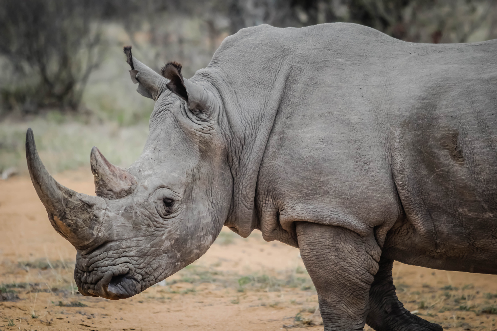

Indian Rhinoceros As Specie
In northwestern India, the Indian rhinoceros is a significant
inhabitant. These giant beasts differ physically from their
African ancestors in many ways. Their segmented hide resembles a
formidable natural body armor coat. It also works in a similar
way: the porous skin between the thicker hide "plates" helps them
to move while the rhinoceros walks. Indian rhinos have only one
horn, as their Latin name Rhinoceros unicornis means rhinos only
have one horn. It is estimated that the Indian rhino weighs from
about 1,800 and 2,700 kilograms (4,000 and 6,000 pounds). This
creature is approximately 2.0 meters (7 feet) tall and measures
about 3.5 meters (11.5 feet) long. While somewhat larger than the
white rhinoceros, the Indian rhinoceros is generally considered to
be of the same approximate size as the African rhinoceros and can
be distinguished from the Javan rhinoceros by having a large horn,
tubercles on its skin, and distinct skin folds.

Indian Rhinoceros Behavior & Diet
These species are similar to most rhinos in that they have acute
listening and a profound sense of scent. If they can smell, then
they can locate each other by tracking the scent trails left
behind by the gigantic animals. When aroused, an Indian rhino can
move quickly. At 30 miles per hour, their speed is equivalent to
their charging time. Even though they are big, they are light and
nimble. The Indian rhino is a grazer who follows a predictable
route through its tall-grass habitat, traveling in defined,
tunnel-like tracks. It has a prehensile tongue, which can grasp
tall grasses. Rhinos can be defined as grazing animals that also
consume fruits, leaves, and even small-scale agriculture crops.
Water and marine plants are often found in close proximity to
where they live. To stop exerting themselves in the brutal midday
sun, these species graze in the cooler morning and afternoon
temperatures. They also wallow or immerse themselves in water
while the sun is high.